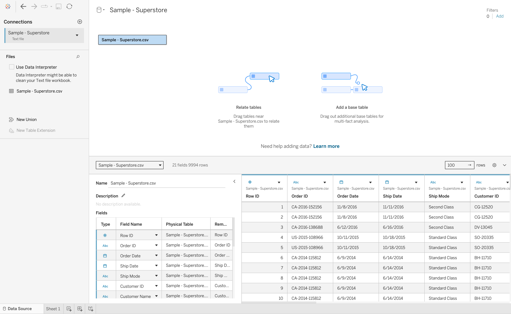
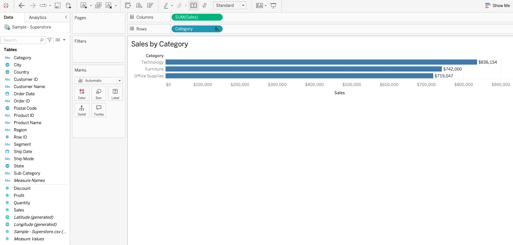
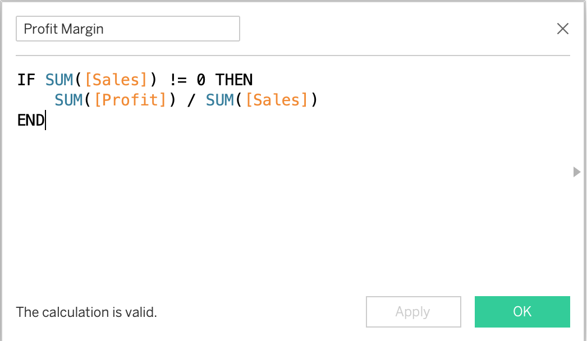
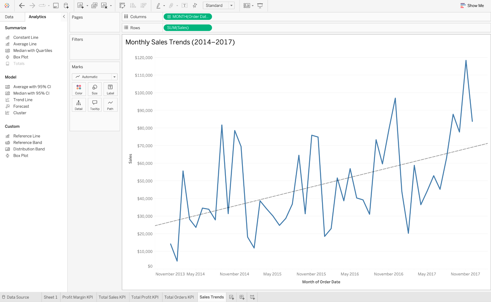
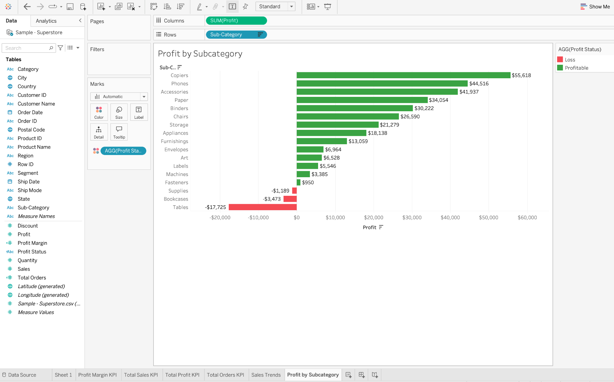
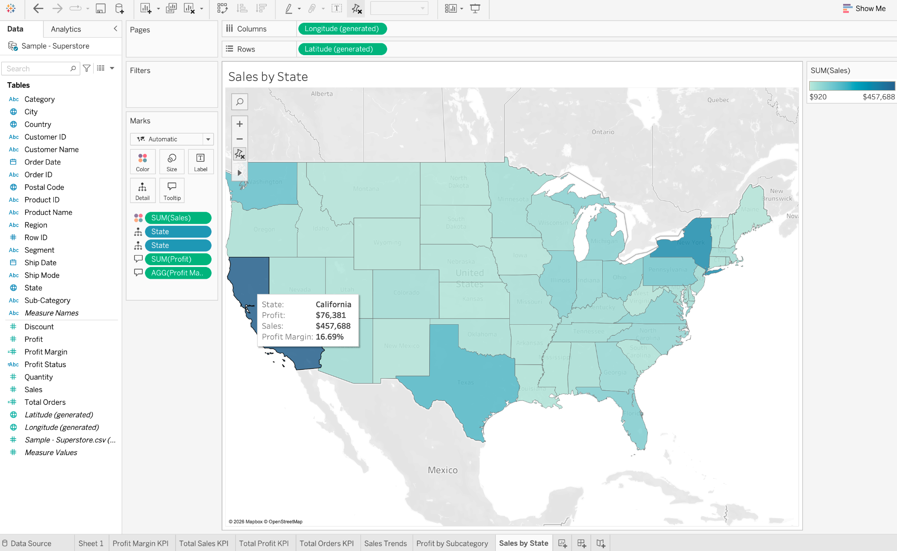
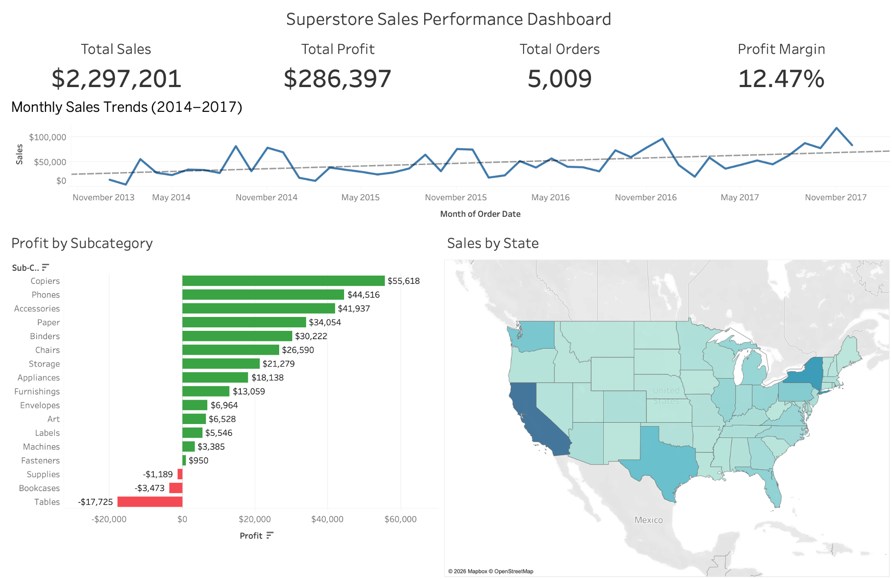
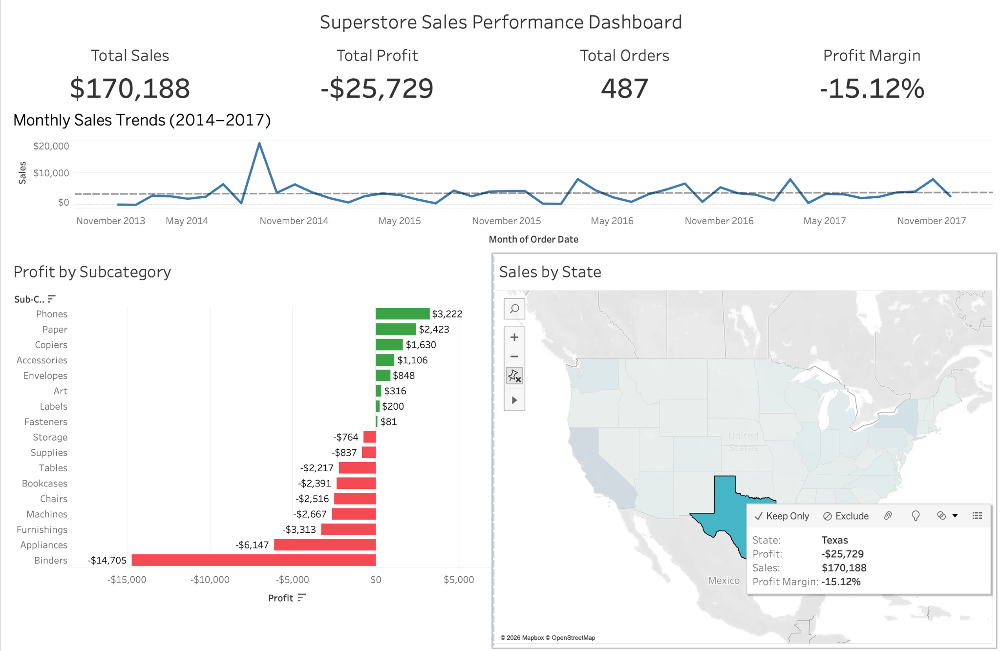
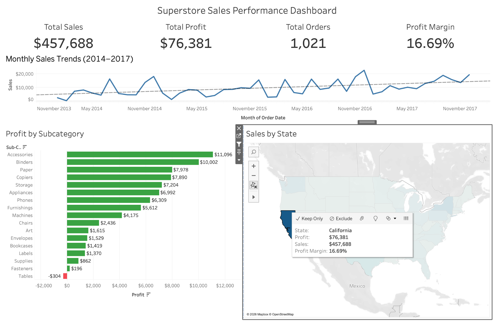

PROJECT 04 / TABLEAU
Superstore Sales Performance Dashboard
An interactive Tableau dashboard analyzing retail sales, profitability, product performance, and geographic trends using the Sample Superstore dataset.
Interactive Dashboard
Explore the live Tableau dashboard below. Select a state on the map to filter sales, profit, and business performance metrics.
Project Overview
This project analyzes 9,994 retail records from the Sample Superstore dataset. The goal was to build an interactive dashboard that helps identify sales trends, profitable and unprofitable products, and regional differences in business performance.
Dashboard Features
- Four key performance indicators
- Monthly sales trends from 2014 to 2017
- Profit comparison by product subcategory
- Geographic sales performance by state
- Interactive state filtering across charts
Calculated Fields
Profit Margin
IF SUM([Sales]) != 0 THEN
SUM([Profit]) / SUM([Sales])
ENDTotal Orders
COUNTD([Order ID])Business Insights
- Overall sales reached approximately $2.30 million, with a 12.47% profit margin.
- California generated approximately $457,688 in sales and $76,381 in profit.
- Texas generated approximately $170,188 in sales but recorded a loss of $25,729.
- High sales do not always indicate strong profitability. Regional analysis helps identify areas requiring attention.
Development Process
Select a step to explore how the Tableau dashboard was developed, from importing the dataset to testing interactive filters.
01. Data Import
Import and preview the Sample Superstore dataset.
⌄

02. Data Exploration
Explore sales performance across product categories.
⌄

03. Calculated Fields
Create calculations to measure profitability
and business performance.
⌄
Profit Margin Calculation
IF SUM([Sales]) != 0 THEN
SUM([Profit]) / SUM([Sales])
END
04. Monthly Sales Trends
Analyze monthly sales trends from 2014 to 2017.
⌄

05. Profit by Subcategory
Identify profitable and unprofitable
product subcategories.
⌄

06. Sales by State
Visualize geographic sales performance
across the United States.
⌄

07. Dashboard Development
Combine KPI cards, charts, and maps
into one interactive dashboard.
⌄

08. Texas Interactive Filter
Test state filtering and examine
negative profitability.
⌄
Texas generated approximately $170,188 in sales but recorded a loss of $25,729.

09. California Interactive Filter
Test state filtering and examine
positive profitability.
⌄
California generated approximately $457,688 in sales and $76,381 in profit.

Project Repository
Explore the Tableau workbook, dataset, documentation, and development screenshots on GitHub.
View GitHub Repository